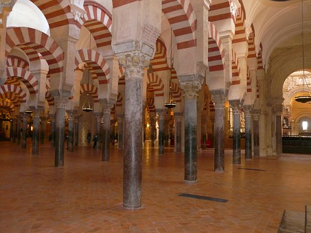
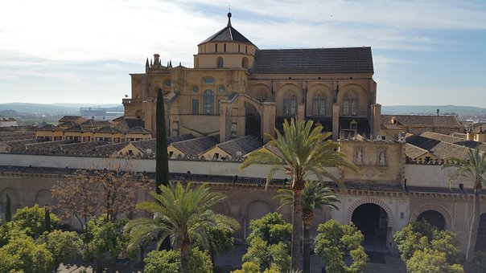

La Mezquita
Una mezquita es un lugar de culto para los seguidores de la fe islámica.
Los musulmanes generalmente se refieren a las mezquitas por su nombre arábigo,
masŷid (árabe: مسجد — pronunciado: /ˈmas.ʤid/), en plural masāŷid (مساجد /maˈsa:.ʤid).
La palabra "mezquita" se usa en español para referirse a todo tipo de edificios dedicados al culto islámico,
pero en árabe existe una diferencia entre las mezquitas privadas, más pequeñas, y las mayores, de uso colectivo
(masŷid ŷāmiʿ; árabe: مسجد جامع; mezquita aljama, en español), que albergan a una comunidad mayor y disponen de
más servicios sociales. Estas construcciones tienen sus orígenes en la Península Arábiga, pero en la actualidad
se pueden encontrar en los cinco continentes.
Historia
El inicio de su construcción se debe al primer emir omeya de Córdoba,
haciéndose sobre el emplazamiento de la basílica visigoda de San Vicente Mártir,
iglesia construida en el siglo VI, en cuyo solar se inicia la edificación del oratorio o haram en el año 786.
Este primer edificio consta, en cualquier caso, de once naves longitudinales orientadas hacia el río Guadalquivir,
cuya anchura es idéntica, a excepción de la central, que conduce al mihrab y las dos de los extremos.
La central ligeramente más ancha que el resto y las laterales ligeramente más estrechas, aunque estas leves
diferencias solo son apreciables en un plano. Estas naves constan de doce intercolunios que corren en dirección
al muro de la quibla.
Los materiales utilizados son de acarreo: fustes de columnas y capiteles procedentes de construcciones y épocas anteriores
(romanos y visigodos), sobre los cuales se elevan pilares rectangulares de sillería que dotan de más altura al conjunto.
Para darle estabilidad a este alzado se recurre a dobles arcos, de los cuales el inferior, de herradura, hace funciones de entibo,
mientras que el superior, de medio punto, es el que soporta la cubierta. Este sistema, además de la alternancia cromática y material
de las dovelas, rojas de ladrillo, amarillentas las de caliza, parece estar inspirado en el acueducto romano de Los Milagros (Mérida).
El resultado es un inmenso bosque de columnas coronado de doble arquería que recuerda a un palmeral.
El conjunto se cierra con el muro de la quibla, que a diferencia de la mayoría de mezquitas no está orientado hacia
La Meca sino hacia el sur, hecho éste cuyo motivo está en duda, y que van desde la inexperiencia y el error en el cálculo,
hasta la pura intencionalidad política tras la proclamación de la independencia política del emirato cordobés, todo apunta a
que quisieron imitar a la Mezquita de Damasco, también de los Omeya, y orientada al sur. Las obras terminaron en el 788.

